BroadcastManager: how a value becomes fetchable pieces
component index | BlockManager | BlockManagerMaster | Block transfer service
A Spark broadcast gives tasks a small handle for a read-only value. Creating it seeds pieces on the driver; it does not push the whole value to every executor. A consumer fetches only the pieces it lacks and can then serve those pieces to other consumers. This is the distribution mechanism, not the SQL broadcast exchange that builds a relation for a join.
Flow at a glance
- Driver: Publish the value as numbered pieces.
- Cold executor: Fetch missing pieces from their holders.
- Same executor: Rebuild the value from the ordered pieces.
Key distinction: Tasks carry a handle, not the whole value, and peers can supply pieces as well as the driver.
Show the animated flow

Owners and representations
Each driver/executor SparkEnv constructs a JVM BroadcastManager and initializes a TorrentBroadcastFactory. The driver creates broadcasts through SparkContext.broadcastInternal: it checks the input, asks the manager for a handle, and registers it for cleanup. The manager allocates a Long ID, delegates to TorrentBroadcast, and maintains a per-JVM cache with strong keys and weak values so different handles for the same ID can share a reconstructed object. No separate YARN process or broadcast server is started. Environment · creation API · manager state · factory
| Representation for broadcast 9 |
Where and why it exists |
Broadcast[T] / TorrentBroadcast handle |
Serializable ID plus reconstruction information, including piece count and optional checksums. The memoized JVM value is transient; serializing the handle does not inline that value. |
broadcast_9 |
Whole JVM value, stored with MEMORY_AND_DISK, tellMaster=false on the ordinary path. Reusable locally, not advertised as a block for remote consumers. |
broadcast_9_piece0, broadcast_9_piece1, ... |
Serialized pieces stored with MEMORY_AND_DISK_SER, tellMaster=true. These are the IDs remote peers can discover and fetch. |
broadcast_9_python (classic PySpark) |
On executor deserialization of PythonBroadcast, a local DISK_ONLY block backs the path to the Python payload. It is neither a torrent piece nor a Python object already loaded in a worker. |
Handle fields · block naming · whole value and pieces · Python backing file
Publish once, read on demand
- Seed. Public
SparkContext.broadcast(value) uses serializedOnly=false. The driver stores the whole value locally, serializes the value through an optionally compressed stream, and divides the resulting bytes into pieces (spark.broadcast.blockSize, default 4m). If checksums are enabled, it records an Adler-32 for each piece. It stores and reports each numbered piece. A failure during piece creation/storage removes the partially written broadcast and rethrows; no usable handle is returned. Driver write path · serialization · configuration defaults
- Look up the whole value before fetching.
Broadcast.value checks validity. TorrentBroadcast.getValue tries the handle's transient soft reference (weak for serializedOnly). On a miss it locks by broadcast ID within this JVM, checks BroadcastManager.cachedValues, then checks the local block manager for broadcast_9. A live whole-value hit skips all network requests; simultaneous first readers in one JVM need not download the same broadcast independently. Handle cache · keyed lookup and reconstruction
- Fetch missing pieces. On a whole-value miss, visit piece IDs in randomized order. First try
getLocalBytes; otherwise call getRemoteBytes. The block manager gets locations from the driver and reads a same-host file or fetches from a holder over Netty. It need not choose the driver: executor 2 can serve piece0 while the driver serves piece1. A remote piece is checksum-checked when enabled, stored locally, and reported. Random fetch order does not change reconstruction: each result is placed at its numbered index. Piece reader · where the bytes come from
- Reassemble and reuse. Concatenate the piece streams in index order, decompress if configured, then deserialize. Cache the object locally when appropriate, populate the weak-value cache, and dispose the temporary block data. The nonlocal
serializedOnly=true optimization skips pinning the original whole value in the driver's block manager at creation; it does not eliminate pieces or forbid caching the merged object inside an executor task. Reconstruction and cache conditions · stream ordering
What bc.value means in Python
For bc = sc.broadcast(lookup), the Python driver pickles lookup to a file (via a local socket to the JVM if I/O encryption is enabled). The JVM broadcasts a PythonBroadcast wrapping that payload, not a live Python dictionary. Pickling bc into a task closure records its broadcast ID rather than embedding lookup again. Python driver and worker constructors · closure reduction
On the executor, worker setup compares the IDs needed for this task with the IDs that Python worker already knows. For a new ID the JVM reads broadcast.value.path (which can trigger the torrent fetch) and gives the worker a local path, or serves decrypted data over a local socket. With a path, Python unpickles lazily on first .value; with the decryption socket it loads during worker setup. The reusable JVM pieces and the unpickled object in each Python worker are different memory costs. Large Python objects can exhaust worker memory even when all pieces were already local. JVM worker handoff · Python registry · lazy .value
Failure, cleanup and diagnosis
unpersist asks for executor-side block removal but keeps the driver seed and the handle valid; a later task can fetch again. destroy invalidates the handle and includes the driver in removal. Blocking controls whether the caller waits for block removal, not whether every application-held Java or Python reference vanishes. The master sends removal to the selected managers rather than relying only on advertised locations, so they also remove unreported whole-value blocks. The context cleaner can initiate removal when the driver handle is no longer referenced. At environment shutdown, Spark stops the broadcast manager and then the local block manager; the torrent factory has no separate service to shut down. Lifecycle API · removal flags · master fan-out · cleaner · shutdown order
For a cold or failed read, correlate the driver's Created broadcast ID with the executor's Started reading broadcast variable log and the specific broadcast_9_pieceN. A missing remote piece and a checksum mismatch fail at different points; neither runs RDD lineage to recreate the original value. If all pieces were read successfully but the Python worker fails while loading, investigate the local file/decryption/unpickle step, not the driver's scheduler port. Creation log · per-piece failures · read timing